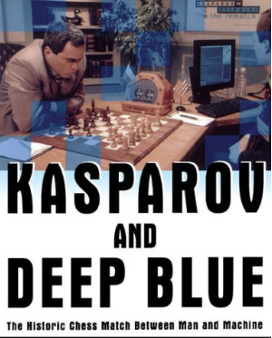

Deep Blue was a customized IBM RS/6000 SP supercomputer famous
for becoming the first machine to defeat a reigning world chess
champion under standard tournament controls.
Developed by
Feng-hsiung Hsu and IBM, the AI made history by defeating Garry Kasparov
in a legendary six-game match in May 1997